Cómo se configura y se usa el costo en destino en AMV para que fletes, aduana y demás gastos de importación pasen al costo del inventario. Todas las capturas salen de la base de producción.
Un costo en destino toma un gasto que ya se registró en una cuenta de gasto (flete, agente aduanal, arancel) y lo traslada al valor del inventario de una recepción. Son dos asientos:
La factura del gasto debita la cuenta de gastos del producto de servicio (en AMV, 5.1.01.007 GASTOS DE IMPORTACION) contra la cuenta por pagar del proveedor.
El costo en destino validado debita la cuenta de inventario de la categoría (1.1.13.001 INVENTARIO VENTA) y acredita la misma cuenta de gastos. La cuenta de gastos queda en cero para ese gasto y el valor queda en el inventario.
Por qué importa
La cuenta de gastos del producto de servicio funciona como puente. Si la factura y el costo en destino no usan la misma cuenta, el gasto queda duplicado en resultados o la cuenta queda con saldo acreedor. Por eso lo primero que se configura es esa cuenta.
Ejemplo real con LC/2026/0118 (22/10/2026, recepción VAL/IN/00044, 5.280 cajas de NORI KAMPOS 10HOJAS/50P), gasto de US$ 43.532,00 a la tasa 884,7496:
Asiento 1 · factura del gasto
Proveedor del servicio
Cuenta
Débito
Crédito
5.1.01.007 Gastos de importación
38.514.919,59
2.1.02.x Cuentas por pagar
38.514.919,59
Ilustrativo: LC/2026/0118 no tiene factura enlazada (hallazgo H3). Montos en Bs; el IVA del servicio va a crédito fiscal y no entra al costo.
Asiento 2 · costo en destino validado
STJ/2026/10/0001 (LC/2026/0118)
Cuenta
Débito
Crédito
1.1.13.001 Inventario venta
38.514.919,59
5.1.01.007 Gastos de importación
38.514.919,59
Este es el asiento real registrado en producción (ver sección 5).
2Configuración
Esta configuración ya está hecha en AMV. Úsala para revisar que nada cambie y para configurar productos de gasto nuevos.
Costos en destino marcado. Diario predeterminado vacío: Odoo usa entonces el diario de valuación de inventario (STJ · Valuación de inventario).
2.2 Valuación perpetua y método de costo de la empresa
Ruta: Contabilidad › Configuración › Ajustes › Valuación de inventario
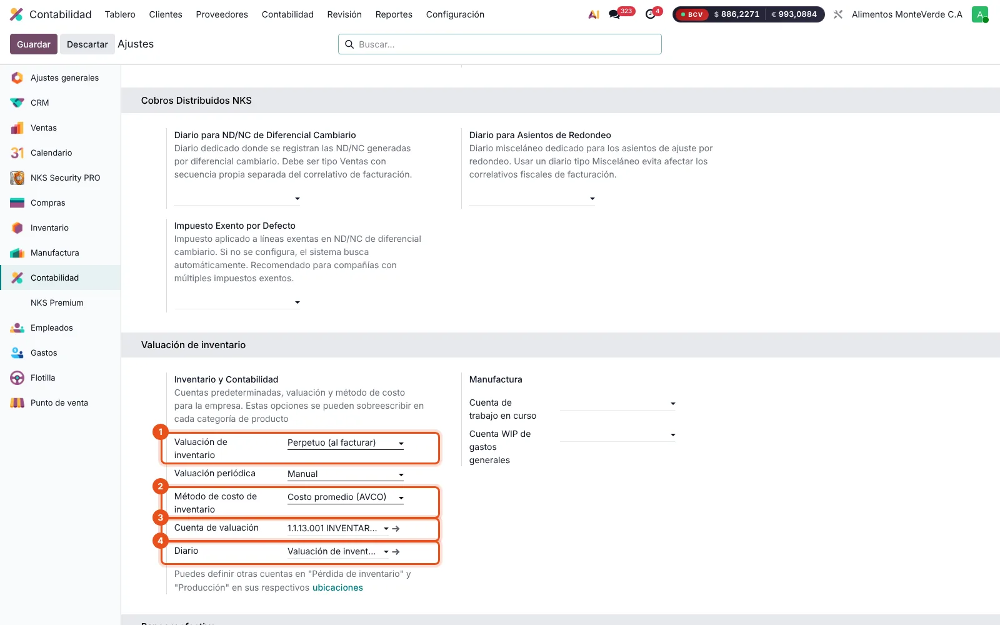
Valuación de inventario: Perpetuo (al facturar). Sin valuación perpetua el costo en destino cambia el costo pero no genera asiento.
Método de costo: Costo promedio (AVCO). El gasto se suma al costo promedio del producto.
Cuenta de valuación: 1.1.13.001 INVENTARIO VENTA. Es la cuenta que recibe el débito del costo en destino.
Diario: Valuación de inventario.
Novedad de Odoo 19
En Odoo 19 la valuación y el método de costo se definen por empresa en Contabilidad y cada categoría puede sobrescribirlos. En Odoo 18 se configuraban solo en la categoría, con la opción «Automatizada».
2.3 Categoría de los productos que se importan
Ruta: Inventario › Configuración › Categorías de productos. Ejemplo: All / NORI / NORI.
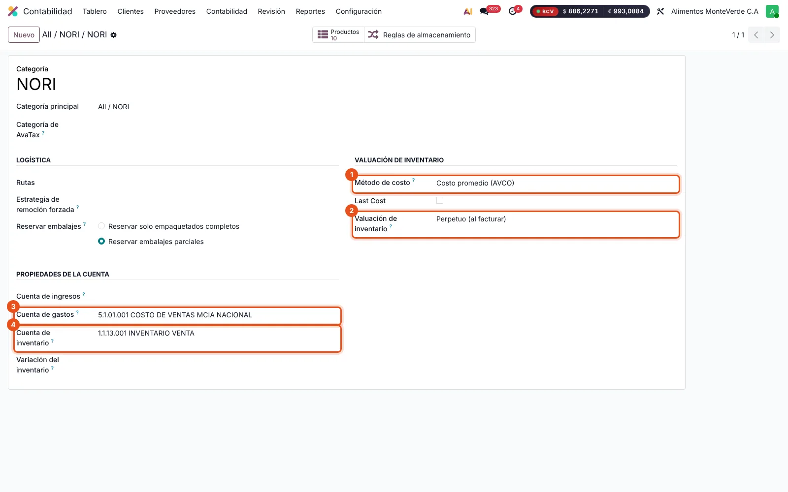
Método de costo: Costo promedio (AVCO).
Valuación de inventario: Perpetuo (al facturar).
Cuenta de gastos: 5.1.01.001 COSTO DE VENTAS MCIA NACIONAL. Es el costo de venta de la mercancía; no participa en el costo en destino.
Cuenta de inventario: 1.1.13.001 INVENTARIO VENTA. Débito del asiento del costo en destino.
Las 67 categorías de AMV tienen valuación perpetua, AVCO y cuenta de inventario 1.1.13.001, así que cualquier producto almacenable puede recibir costos en destino.
2.4 Producto de servicio para el gasto
Cada tipo de gasto que se quiera capitalizar necesita un producto de tipo Servicio marcado como costo en destino. El producto de referencia en AMV es [GEN04] GASTO DE IMPORTACION. Ruta: Compras › Productos › Productos.
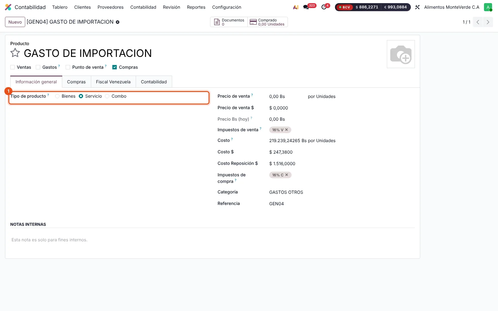
Tipo de producto: Servicio. La casilla de costo en destino solo aparece en servicios.
Pestaña Compras › Facturas de proveedores
Es un costo en destino marcado. Las líneas de factura con este producto se marcan solas como costo en destino.
Método de división predeterminado: Por cantidad. Se puede cambiar en cada costo en destino (ver sección 6).
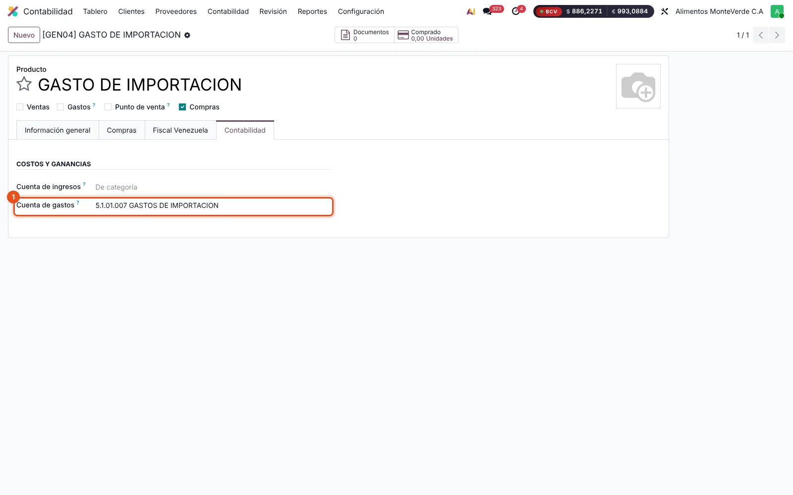
Cuenta de gastos: 5.1.01.007 GASTOS DE IMPORTACION. La factura la debita y el costo en destino la acredita. Es la cuenta que define todo el flujo.
Regla
Si el producto no tiene cuenta de gastos propia, Odoo toma la de su categoría. Si la categoría tampoco tiene, el gasto termina en otra cuenta. Asigna siempre la cuenta en el producto. Ver hallazgo H1.
2.5 Cuenta de gastos de importación y diario
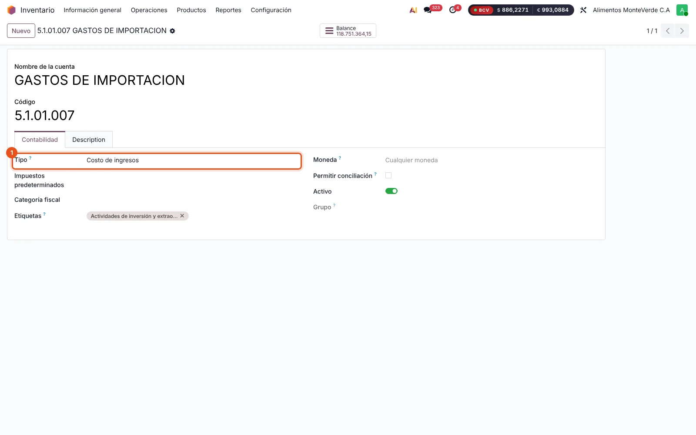
5.1.01.007 GASTOS DE IMPORTACION, tipo Costo de ingresos, sin conciliación. Ruta: Contabilidad › Configuración › Plan de cuentas.
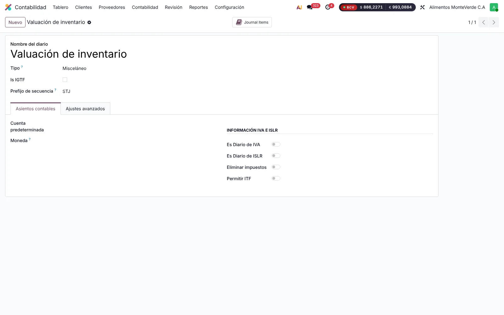
El diario Valuación de inventario (Misceláneo, prefijo STJ) recibe los asientos de los costos en destino. Ruta: Contabilidad › Configuración › Diarios.
2.6 Tipos de gasto de importación (módulo de la localización)
El módulo nks_importaciones agrega el menú Importaciones › Configuración › Tipos de gasto con 14 tipos y su criterio de distribución. Cada tipo puede enlazar un producto de servicio en la columna Producto servicio, que hoy está vacía en todos. Todavía no hay expedientes de importación registrados.
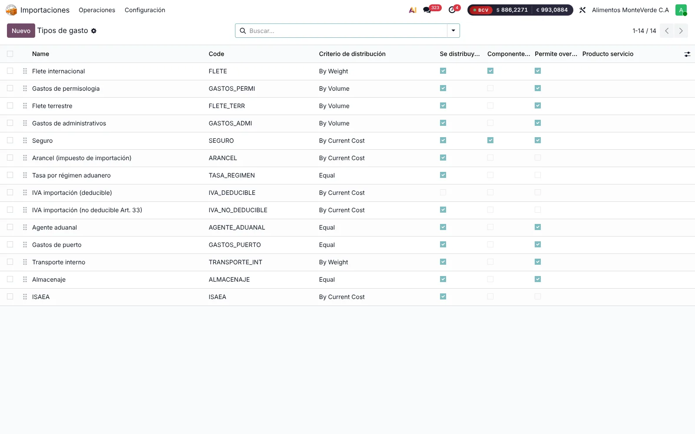
Flete internacional y Transporte interno reparten por peso; Seguro, Arancel e ISAEA por costo actual; Agente aduanal, Gastos de puerto y Almacenaje en partes iguales. El IVA de importación deducible no se distribuye: va a crédito fiscal.
3Revisión de la configuración actual
Al revisar producción el 26/10/2026 encontramos estos puntos. Ninguno se corrigió: los cambios de cuentas los decide Contabilidad.
CorregirH1 · «GASTO DE IMPORTACION ORDINARIA» no tiene cuenta de gastos
El producto está marcado como costo en destino, pero su cuenta de gastos dice «De categoría» y su categoría GASTOS OTROS tampoco tiene cuenta de gastos. Resultado: la factura C003-00001942 de CORPORACION 18, S.A. registró el gasto de 370.049,40 Bs en 5.1.01.001 COSTO DE VENTAS MCIA NACIONAL, mezclado con el costo de venta.
Acción sugerida: asignar 5.1.01.007 GASTOS DE IMPORTACION como cuenta de gastos del producto (o de la categoría GASTOS OTROS). La decisión es de Contabilidad.
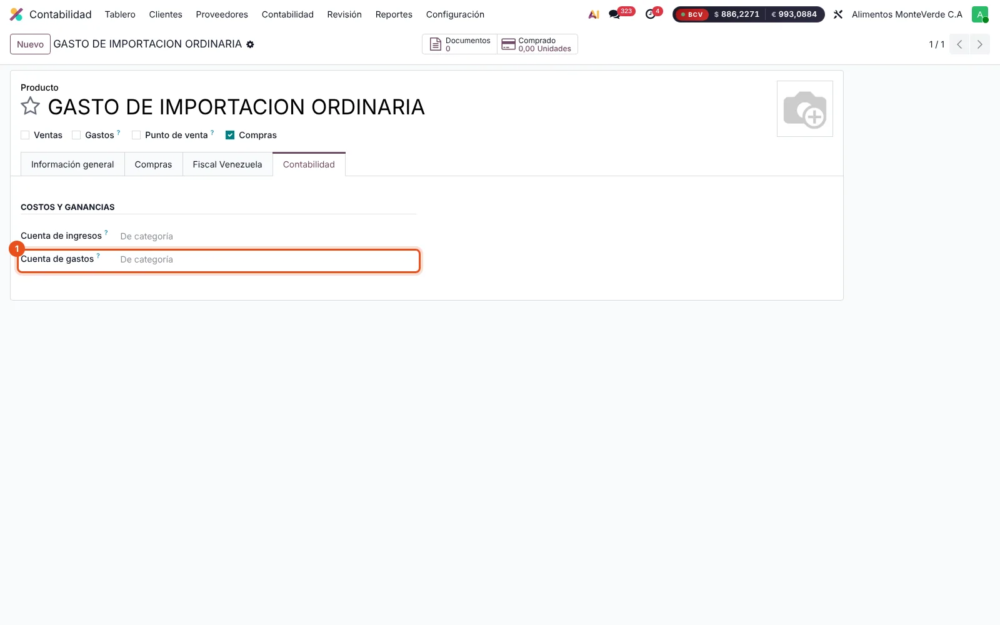
Cuenta de gastos «De categoría».
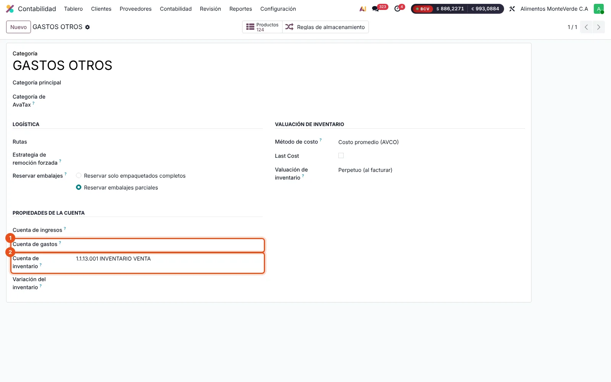
Categoría GASTOS OTROS: Cuenta de gastos vacía.
Cuenta de inventario 1.1.13.001 (no aplica a servicios).
PendienteH2 · Factura C003-00001942 sin costo en destino
La factura (ref. 140066, fecha 19/10/2026) tiene una línea de costo en destino y el botón Crear costos en destino sigue visible: el gasto aún no se ha llevado a ninguna recepción. Conviene resolver H1 antes de crearlo, porque el costo en destino acredita la misma cuenta de gastos del producto. La captura está en la sección 4.1.
MejorarH3 · LC/2026/0118 sin factura de proveedor vinculada
El costo en destino se creó desde Inventario y el campo Factura de proveedor quedó vacío. El asiento es correcto, pero se pierde el enlace para auditar de qué factura salió el gasto. Recomendación: crear los costos en destino desde la factura (4.1) o llenar el campo antes de validar.
CorrectoH4 · Valuación, categorías y producto GEN04
Valuación perpetua, AVCO, cuenta de inventario 1.1.13.001 en las 67 categorías y producto GEN04 con cuenta 5.1.01.007. El costo en destino LC/2026/0118 dejó el costo unitario del NORI exactamente en el valor esperado (sección 5).
4Uso paso a paso
Antes de empezar, la mercancía tiene que estar recibida: el costo en destino se aplica sobre una recepción en estado Hecho.
Recepción VAL/IN/00044 (NANTONG SAILING TRADING CO., LTD) en estado Hecho.
Documento origen OC-00916.
Fecha efectiva 22/10/2026, 1:05 p. m.
4.1 Desde la factura del gasto (recomendado)
Registra la factura del proveedor del servicio (agente aduanal, naviera, transporte) en Contabilidad › Proveedores › Facturas con el producto de servicio marcado como costo en destino.
En las líneas, la columna Costos en destino se marca sola. Si no la ves, actívala con el ícono de columnas opcionales al final de la cabecera de la tabla.
Confirma la factura. Aparece el botón Crear costos en destino.
Pulsa el botón. Odoo abre un costo en destino en borrador con una línea por cada línea marcada: producto, cuenta de gastos del producto, monto en moneda de la empresa y método de división del producto. La factura queda enlazada.
Continúa en 4.3.
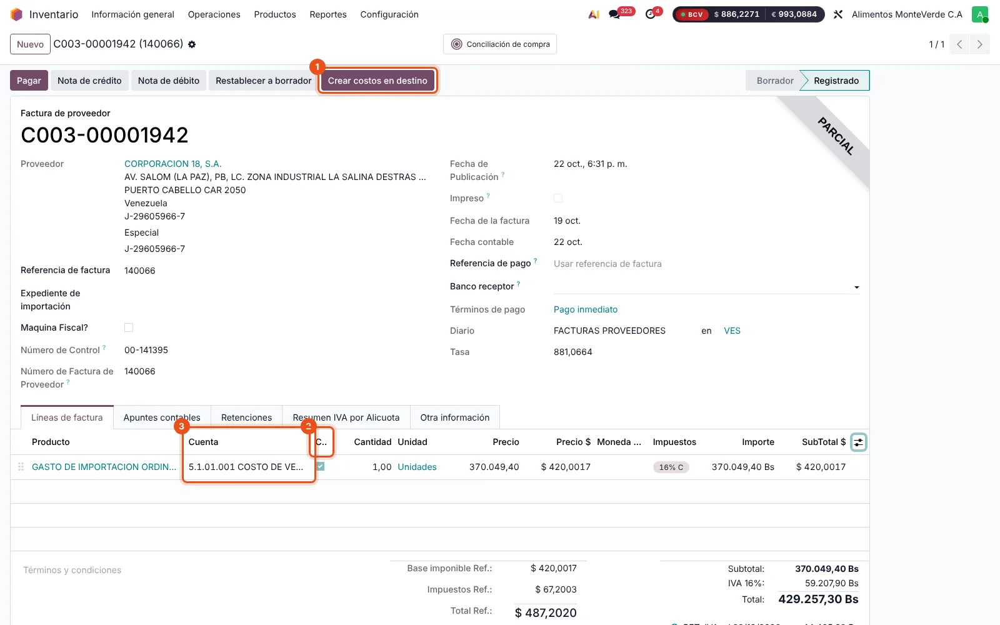
Factura C003-00001942 (pendiente, hallazgo H2).
Botón Crear costos en destino.
Columna Costos en destino (C...) marcada en la línea.
Cuenta de la línea: 5.1.01.001. Con el producto bien configurado diría 5.1.01.007 (hallazgo H1).
4.2 Desde Inventario
Úsalo cuando el gasto no viene de una factura de proveedor registrada en Odoo o cuando se reparte un gasto ya contabilizado. Ruta: Inventario › Operaciones › Ajustes › Costos en destino.
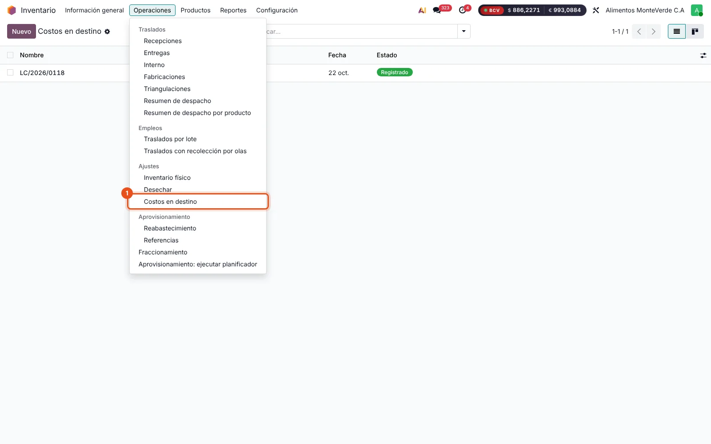
Costos en destino dentro de Operaciones › Ajustes.
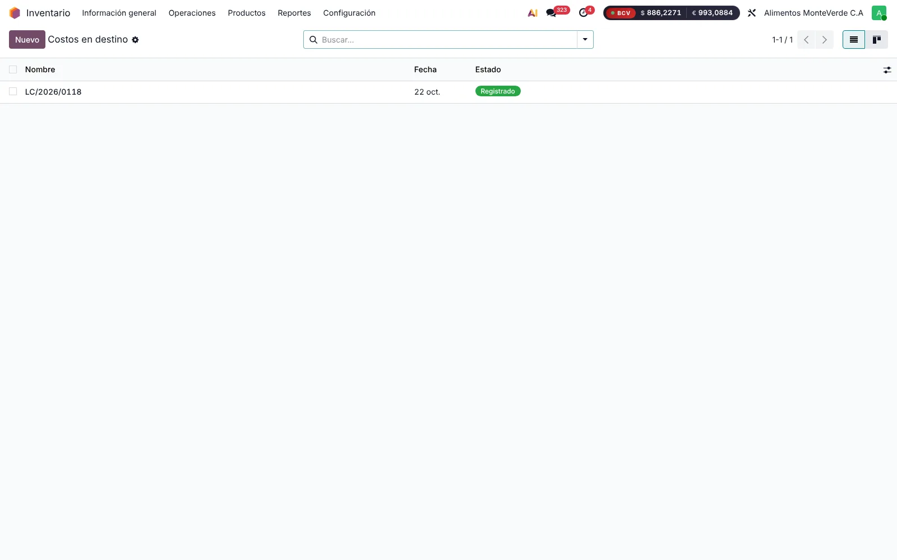
Lista de costos en destino. Pulsa Nuevo.
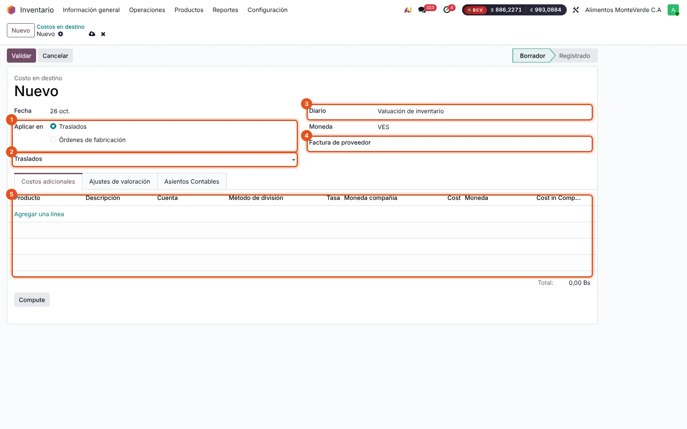
Aplicar en: Traslados (recepciones de compra) u Órdenes de fabricación.
Traslados: elige una o varias recepciones ya validadas. En AMV este campo no permite crear traslados desde aquí (ajuste del chat 2353).
Diario: Valuación de inventario, por defecto.
Factura de proveedor: enlaza la factura del gasto si existe (hallazgo H3).
Costos adicionales: una línea por gasto con producto de servicio, cuenta, método de división y monto.
Moneda (localización dual)
Junto al diario está el campo Moneda. Con US$ cargas el monto en Cost y la localización lo convierte a Bs con la Tasa del día en Cost in Company Currency. El asiento siempre se registra en Bs.
4.3 Calcular y validar
Revisa cada línea de Costos adicionales: cuenta = cuenta de gastos del producto (5.1.01.007) y método de división adecuado.
Pulsa Compute (Calcular). Se llena la pestaña Ajustes de valoración con el reparto por producto.
Revisa el reparto. Si algo no cuadra, corrige las líneas y vuelve a calcular.
Pulsa Validar. El estado pasa a Registrado, se crea el asiento en el diario STJ y el costo promedio de los productos se actualiza.
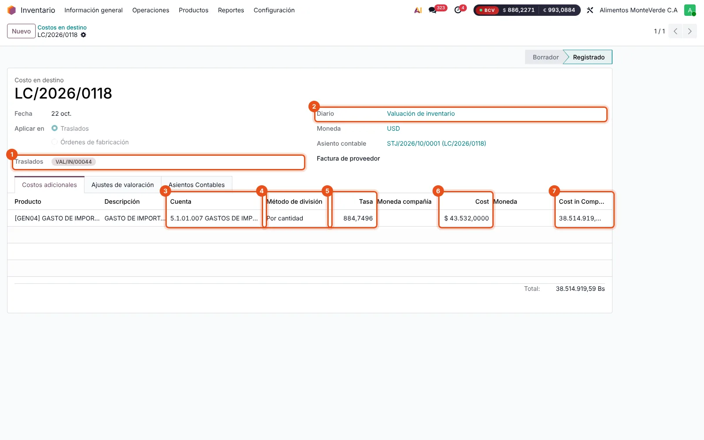
LC/2026/0118 · Costos adicionales
Recepción VAL/IN/00044.
Diario Valuación de inventario.
Cuenta 5.1.01.007 GASTOS DE IMPORTACION (se acredita al validar).
Método de división: Por cantidad.
Tasa 884,7496.
Costo US$ 43.532,0000.
Equivalente 38.514.919,59 Bs.
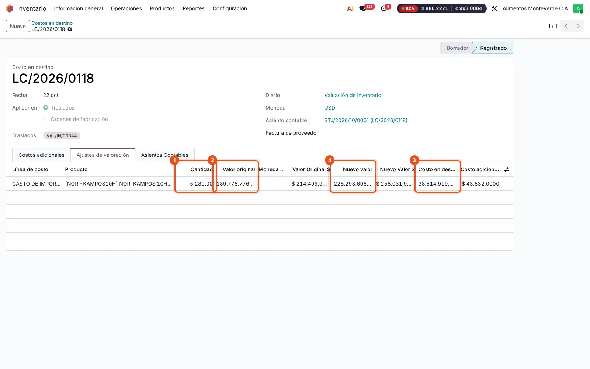
Ajustes de valoración
Cantidad recibida: 5.280 cajas.
Valor original: 189.778.776,00 Bs (US$ 214.499,99).
Costo en destino adicional: 38.514.919,59 Bs (US$ 43.532,00).
Nuevo valor: 228.293.695,59 Bs (US$ 258.031,99).
5Verificar el resultado
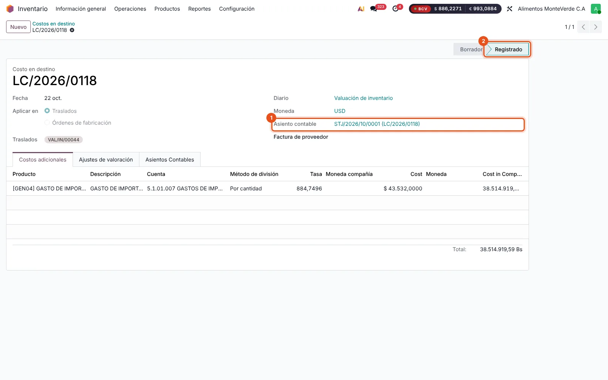
Asiento contable STJ/2026/10/0001: abre el asiento desde aquí.
Estado Registrado.
La pestaña Asientos Contables del formulario es de la localización y aparece vacía; el asiento del costo en destino es el del campo 1.
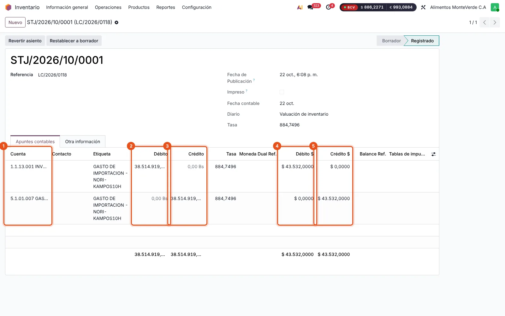
Cuentas: débito 1.1.13.001 INVENTARIO VENTA, crédito 5.1.01.007 GASTOS DE IMPORTACION.
Débito 38.514.919,59 Bs.
Crédito 38.514.919,59 Bs.
Débito en referencia US$ 43.532,00.
Crédito en referencia US$ 43.532,00.
Comprobación del costo unitario de NORI KAMPOS 10HOJAS/50P:
Antes
35.942,95 Bs
US$ 40,6250 por caja
Costo en destino
+ 7.294,49 Bs
US$ 8,2447 por caja
Después
43.237,44 Bs
US$ 48,8697 por caja
228.293.695,59 Bs ÷ 5.280 cajas = 43.237,44 Bs, que es el costo que muestra hoy el producto. Así se comprueba cualquier costo en destino: nuevo valor ÷ cantidad en existencia debe dar el costo del producto, siempre que no hubiera existencias previas de ese producto.
6Métodos de división
El método decide cómo se reparte cada gasto entre los productos de las recepciones elegidas.
Método
Reparte según
Úsalo para
Requisito
Igual
Partes iguales por línea de producto
Agente aduanal, gastos de puerto, almacenaje
—
Por cantidad
Unidades recibidas
Productos de tamaño y valor parecidos (GEN04)
Unidades comparables entre productos
Por costo actual
Valor de compra de cada línea
Seguro, arancel, ISAEA, IVA no deducible
—
Por peso
Peso × cantidad
Flete internacional, transporte interno
Peso cargado en el producto
Por volumen
Volumen × cantidad
Flete terrestre, gastos de permisología
Volumen cargado en el producto
Ojo con peso y volumen
En LC/2026/0118 el NORI aparece con peso 0 y volumen 0 en los ajustes de valoración. Con «Por peso» o «Por volumen» y productos sin esos datos, Odoo reparte en partes iguales sin avisar. Carga peso y volumen en la pestaña Inventario del producto antes de usar esos métodos (los tipos de gasto de fletes de la sección 2.6 los usan).
7Errores comunes
❌ Validar el costo en destino y querer cancelarlo después.
✅ Un costo en destino validado no se cancela. Para revertirlo se crea otro con monto negativo sobre la misma recepción.
❌ Dejar el producto de servicio sin cuenta de gastos («De categoría»).
✅ Asignar 5.1.01.007 en la pestaña Contabilidad del producto para que factura y costo en destino usen la misma cuenta.
❌ Crear el costo en destino semanas después, cuando parte de la mercancía ya se vendió.
✅ Crearlo apenas llega la factura del gasto. Solo se capitaliza la parte que sigue en existencia; lo vendido queda en la cuenta de gastos.
❌ Usar un producto almacenable o consumible para el gasto.
✅ El gasto siempre es un producto de tipo Servicio con «Es un costo en destino».
❌ Elegir una recepción que no está en Hecho.
✅ Validar primero la recepción: el costo se reparte sobre las cantidades realmente recibidas.
❌ Crear el costo en destino sin enlazar la factura del gasto.
✅ Crearlo con el botón de la factura o llenar «Factura de proveedor» antes de validar.
❌ Cargar el monto en US$ con la moneda en Bs.
✅ Cambiar el campo Moneda a USD antes de cargar el costo; la localización convierte con la tasa del día.
8Mapa de cuentas
Rol
Cuenta / diario en AMV
Dónde se configura
Movimiento
Puente del gasto
5.1.01.007 GASTOS DE IMPORTACION
Producto de servicio › Contabilidad › Cuenta de gastos
Débito en la factura; crédito al validar
Inventario
1.1.13.001 INVENTARIO VENTA
Categoría › Cuenta de inventario (y Ajustes de Contabilidad)